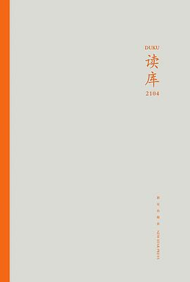

《读库2104》

8.5
★★★★☆
豆瓣评分 · 1,428 人评价
汇聚近代知识分子心路、民国警政秘档与当代底层迁徙的深度非虚构合辑，在文献考辨与田野实录中见证历史风云下人的坚守与离散。
总体观点
《读库2104》以极为广阔的时空跨度，探究了中国近代至当代社会转型期个体的生存境遇。无论是身处时代巨澜中的知识精英，还是在国家工程与体制转轨中默默付出的普通民众，都在文字中获得了平等的被注视权。
全辑贯穿了对档案资料的深度发掘与对微观田野的耐心倾听。通过对民国治安大案档案的解构、对南水北调移民情感波动的追踪，展现了纪实写作穿透时间尘埃、重构真实历史温度的厚重力量。
核心观点
-
1. 时代大转折中知识分子的心路分流
历史大变局前夕，知识分子的政治抉择不仅取决于理论认同，更深植于其家庭羁绊、个人操守以及对民族前途的真诚想象。
雷颐在《风雨故人来》中剖析胡适、陈寅恪、傅斯年等近代学人在1948年前后的去留抉择，展现故人离散背后的思想阵痛。 -
2. 秘档还原市井传奇背后的社会肌理
民国江湖传奇与飞贼大盗的故事往往被民间过度戏剧化，透过警察局第一手办案卷宗，能够看见动荡都市中真实的底层阶级冲突与生存逻辑。
萨苏在《追击“大盗”》中依据日伪时期北平市警察局密卷，还原传奇飞贼“燕子李三”落网与受审全过程，揭露当时的黑市流通与暗门生态。 -
3. 大型工程背后无声的故土连根拔起
宏伟的跨流域调水工程背后，是数以十万计库区农民不得不背井离乡、丢弃祖坟与熟人网络的情感重创，历史不能遗忘这笔庞大的心理账单。
高晓涛《汉水之子》真实记录丹江口水库移民在迁往异乡平原后的水土不服、对汉江清流的彻骨思念以及在异乡重建宗族认同的辛酸。 -
4. 纸墨交游见证中国现代文学经典的诞生
一部文学巨著的问世，离不开老一代编辑家在幕后甘当人梯的细致润色与精神托举，书信往还中凝聚着纯粹的文学信仰。
严平《纸上青砖》重温人民文学出版社老编辑们与巴金、沈从文等大家的手书信札，重现一部稿件历经数年反复推敲打磨的匠人精神。 -
5. 后工业时代老工人的尊严挽歌
国企转轨不仅改变了工厂的运转方式，更瓦解了老工人群体一生的职业自豪与身份认同，他们的晚年沉默包含着沉重的时代代价。
袁凌《工厂挽歌》深入东北重工业衰退腹地，记录老机床工人在退役车间里摩挲旧机床的颤抖双手与下岗家庭两代人的命运浮沉。
全书结构
-
风雨故人来（雷颐）
近代知识分子在时代剧变下的分流与交游，在历史风云变幻中见证学人操守、友谊裂痕与命运转折。
还原平津战役前夕“抢救大陆学人”行动中，陈寅恪与傅斯年在甲板上的静默相顾，以及留在故土学人后来的不同境遇。 -
追击“大盗”（萨苏）
依据解密日伪警政档案与民间史料，还原民国北京城传奇大案侦破内幕与市井众生相。
分析北平侦缉队通过当铺收兑簿册与线民网络，在南城胡同里设伏擒获惯盗的真实侦查技法。 -
汉水之子（高晓涛）
南水北调中线工程移民亲历记，深入丹江口库区记录库民故土难离的情感割裂与迁徙重构。
描写移民出发前全村老幼聚在祖坟前磕头辞别，装上一瓶汉江水和一捧故土带往千里之外陌生安置点的动人场景。 -
纸上青砖（严平）
老一代编辑出版家与现代作家的书信往还与出版掌故，见证中国现代文学经典的诞生阵痛。
细数绿原、牛汉等编辑家在简陋斗室中审读长篇手稿、为青年作家争取出版机会的感人细节。 -
工厂挽歌（袁凌）
东北与西北老工业基地下岗工人家庭的生命轨迹与现实沉浮，深沉的平民底层纪实。
描摹老矿工在废弃矿井旁靠捡拾碎煤度日，面对轰鸣机声沉寂后漫长冬夜里煤炉火光的孤独身影。